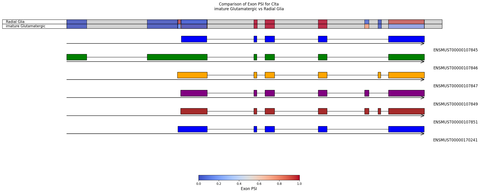
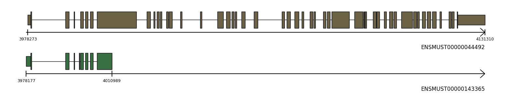
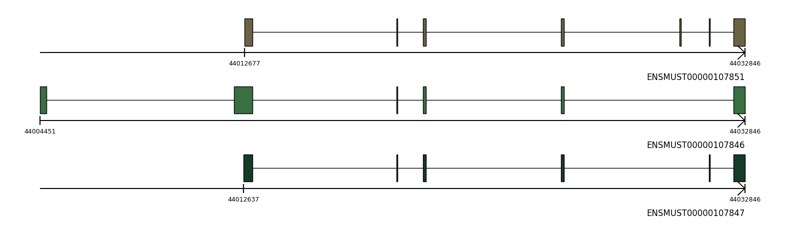

from allos.transcript_data import TranscriptDataTranscript plots
The TranscriptPlots class is defined to facilitate the visualization of transcript structures.
import os
import urllib.request
from pathlib import Pathfrom allos.transcript_data import TranscriptDataplot_transcripts_abundance_simple
plot_transcripts_abundance_simple (adata, gene_name, unit='exon')
*Global method to plot transcript abundance for a given gene (using the entire AnnData) in a “simple” style—each transcript is drawn on its own row with PSI overlays applied directly to the exons. (No top annotation bar is used.)
PSI is computed per exon by default; if unit==‘transcript’, then a single PSI is computed per transcript (over its full span) so that each transcript is uniformly colored.
Assumes that adata.var contains a column ‘geneId’ for filtering.*
plot_transcripts_abundance_global
plot_transcripts_abundance_global (adata, gene_name, unit='exon')
*Global method to plot transcript abundance for a given gene using the entire AnnData, drawing transcripts with a top annotation bar (via draw_transcripts_with_global_top_psi).
PSI values are computed either per exon (unit=‘exon’, default) or per transcript (unit=‘transcript’—a single value over the full transcript span).
Assumes that adata.var contains a column ‘geneId’ for filtering.*
TranscriptPlots
TranscriptPlots (gtf_file=None, reference_fasta=None, intron_scale=0.1)
intron_scale: factor (between 0 and 1) by which intronic regions are compressed.
merge_intervals
merge_intervals (intervals)
Merge a list of [start, end] intervals.
import os
import urllib.request
from pathlib import Path
# Example Ensembl URLs for mouse GRCm39 (release 109)
gtf_url = "ftp://ftp.ensembl.org/pub/release-109/gtf/mus_musculus/Mus_musculus.GRCm39.109.gtf.gz"
fasta_url = "ftp://ftp.ensembl.org/pub/release-109/fasta/mus_musculus/dna/Mus_musculus.GRCm39.dna.primary_assembly.fa.gz"
# Store data one directory back
data_dir = Path("..") / "data"
data_dir.mkdir(parents=True, exist_ok=True)
gtf_file_local = data_dir / "Mus_musculus.GRCm39.109.gtf.gz"
fasta_file_local = data_dir / "Mus_musculus.GRCm39.dna.primary_assembly.fa.gz"
# Download if not already present
if not gtf_file_local.is_file():
print(f"Downloading {gtf_url}...")
urllib.request.urlretrieve(gtf_url, gtf_file_local)
if not fasta_file_local.is_file():
print(f"Downloading {fasta_url}...")
urllib.request.urlretrieve(fasta_url, fasta_file_local)Downloading ftp://ftp.ensembl.org/pub/release-109/fasta/mus_musculus/dna/Mus_musculus.GRCm39.dna.primary_assembly.fa.gz...To initialise class:
tp = TranscriptPlots(gtf_file=gtf_file_local)import allos.preprocessing as pp
mouse_data = pp.process_mouse_data()
üîé Looking for file at: /home/runner/work/allos/allos/allos/resources/e18.mouse.clusters.csv
✅ File found at: /home/runner/work/allos/allos/allos/resources/e18.mouse.clusters.csv
✅ File already exists at: /home/runner/work/allos/allos/allos/resources/data/mouse_1.txt.gz
üîÑ Decompressing /home/runner/work/allos/allos/allos/resources/data/mouse_1.txt.gz to /home/runner/work/allos/allos/allos/resources/data/mouse_1.txt...
✅ Decompression complete.
Test data (mouse_1) downloaded successfully
✅ File already exists at: /home/runner/work/allos/allos/allos/resources/data/mouse_2.txt.gz
üîÑ Decompressing /home/runner/work/allos/allos/allos/resources/data/mouse_2.txt.gz to /home/runner/work/allos/allos/allos/resources/data/mouse_2.txt...
✅ Decompression complete.
Test data (mouse_2) downloaded successfully/opt/hostedtoolcache/Python/3.10.16/x64/lib/python3.10/site-packages/anndata/_core/anndata.py:1756: UserWarning: Observation names are not unique. To make them unique, call `.obs_names_make_unique`.
utils.warn_names_duplicates("obs")mouse_data.obs| batch | cell_type | |
|---|---|---|
| CCACCTACAAAGTCAA | 0 | mature Glutamatergic |
| AACCATGAGACCACGA | 0 | Cajal-Retzius |
| GATGAGGTCGACCAGC | 0 | imature Glutamatergic |
| GCACTCTTCTATCGCC | 0 | imature Glutamatergic |
| TGCCCTAAGGCCCGTT | 0 | intermediate progenitor |
| ... | ... | ... |
| TACTCATTCGCCATAA | 1 | mature GABAergic |
| CGTGAGCTCTCTAAGG | 1 | imature Glutamatergic |
| TTATGCTAGTAAGTAC | 1 | mature GABAergic |
| CGGACACTCTTGTCAT | 1 | radial glia |
| GGCTCGAGTACCGAGA | 1 | mature GABAergic |
1109 rows × 2 columns
tp.compare_two_celltypes_psi(adata=mouse_data, gene_name='Clta', label_column='cell_type', group1='imature Glutamatergic', group2= 'radial glia', celltype1_label='imature Glutamatergic', celltype2_label='Radial Glia')
# Global style using the top annotation bar:
tp.plot_transcripts_abundance_global(
adata=mouse_data,
gene_name='Clta',
unit='exon' # or unit='transcript'
)
# Simple style with direct PSI overlays on exons:
tp.plot_transcripts_abundance_simple(
adata=mouse_data,
gene_name='Clta',
unit='exon' # or unit='transcript'
)--------------------------------------------------------------------------- AttributeError Traceback (most recent call last) Cell In[50], line 2 1 # Global style using the top annotation bar: ----> 2 tp.plot_transcripts_abundance_global( 3 adata=mouse_data, 4 gene_name='Clta', 5 unit='exon' # or unit='transcript' 6 ) 8 # Simple style with direct PSI overlays on exons: 9 tp.plot_transcripts_abundance_simple( 10 adata=mouse_data, 11 gene_name='Clta', 12 unit='exon' # or unit='transcript' 13 ) AttributeError: 'TranscriptPlots' object has no attribute 'plot_transcripts_abundance_global'
tp.get_transcript_info('ENSMUST00000044492'){'transcript_id': 'ENSMUST00000044492',
'transcript_name': 'Akap9-201',
'transcript_type': 'unknown',
'cds_start': 3978442,
'cds_end': 4129693,
'chromosome': '5',
'strand': '+'}To plot a panel for one or several transcripts:
tp.draw_transcripts_list(['ENSMUST00000044492', 'ENSMUST00000143365'], colors=ghibli, draw_cds=True)
#get_transcript_info helps to retrieve information about the transcripts of interest:
# import pandas as pd
# transcripts = ["ENSMUST00000107851", "ENSMUST00000107846", "ENSMUST00000107847"]
# transcripts_info = []
# for i in transcripts:
# transcripts_info.append(tp.get_transcript_info(i)) # Append transcript info to list
# df = pd.DataFrame(transcripts_info) # Convert list of dictionaries to DataFrame
# print(df) # Display the DataFrame transcript_id transcript_name transcript_type cds_start cds_end \
0 ENSMUST00000107851 Clta-205 unknown 44012791 44032569
1 ENSMUST00000107846 Clta-202 unknown 44012791 44032569
2 ENSMUST00000107847 Clta-203 unknown 44012791 44032569
chromosome strand
0 4 +
1 4 +
2 4 + “draw_transcript_list_unscaled” keeps the structure of transcripts but shortens the introns. It is useful to compare the structure of transcipts with extremely long introns:
# tp.draw_transcripts_list_unscaled(["ENSMUST00000107851", "ENSMUST00000107846", "ENSMUST00000107847"], colors=ghibli)
If neither gtf nor fasta is provided, the transcripts can be provided as ensembl id and the coordinates will be fetched from ensembl api.
# #cage_peaks = "https://fantom.gsc.riken.jp/5/datafiles/reprocessed/mm10_latest/extra/CAGE_peaks/mm10_fair+new_CAGE_peaks_phase1and2.bed.gz"
# cage_peaks = "https://reftss.riken.jp/datafiles/current/mouse/refTSS_v4.1_mouse_coordinate.mm39.bed.gz"# def download_and_extract_bed(url, local_folder):
# """
# Downloads and extracts a BED file from a given URL if it doesn't already exist.
# Parameters:
# - url (str): The URL of the `.bed.gz` file to download.
# - local_folder (str): The folder where the file should be saved.
# Returns:
# - str: Path to the extracted BED file.
# """
# # Ensure local folder exists
# os.makedirs(local_folder, exist_ok=True)
# # Extract filename from URL
# filename = os.path.basename(url)
# compressed_file = os.path.join(local_folder, filename)
# extracted_file = compressed_file.replace(".gz", "")
# # Check if extracted file already exists
# if os.path.exists(extracted_file):
# print(f"Extracted BED file already exists: {extracted_file}")
# return extracted_file
# # Download if necessary
# if not os.path.exists(compressed_file):
# print(f"Downloading {compressed_file}...")
# response = requests.get(url, stream=True)
# with open(compressed_file, "wb") as f:
# shutil.copyfileobj(response.raw, f)
# print("Download complete.")
# # Extract the file
# print(f"Extracting {compressed_file}...")
# with gzip.open(compressed_file, "rb") as f_in, open(extracted_file, "wb") as f_out:
# shutil.copyfileobj(f_in, f_out)
# print(f"Extraction complete: {extracted_file}")
# return extracted_file# cage_peaks = download_and_extract_bed(cage_peaks, "../data/")Extracted BED file already exists: ../data/refTSS_v4.1_mouse_coordinate.mm39.bed# import pandas as pd
# #col_names = ["chrom", "start", "end", "name", "score", "strand"]
# cage_df = pd.read_csv(cage_peaks, sep="\t", comment='#')# cage_df| chromosome | start | end | refTSS_ID | score | strand | |
|---|---|---|---|---|---|---|
| 0 | chr1 | 3221101 | 3221109 | rfmm_1.1 | 1 | + |
| 1 | chr1 | 3226272 | 3226277 | rfmm_2.1 | 1 | + |
| 2 | chr1 | 3389727 | 3389730 | rfmm_3.1 | 1 | - |
| 3 | chr1 | 3448009 | 3448012 | rfmm_4.1 | 1 | - |
| 4 | chr1 | 3559372 | 3559376 | rfmm_5.1 | 1 | - |
| ... | ... | ... | ... | ... | ... | ... |
| 172319 | chrY | 90831164 | 90831167 | rfmm_172320.1 | 1 | + |
| 172320 | chrY | 90831173 | 90831188 | rfmm_172321.1 | 1 | + |
| 172321 | chrY | 90831968 | 90831970 | rfmm_172322.1 | 1 | + |
| 172322 | chrY | 90836575 | 90836577 | rfmm_172323.1 | 1 | - |
| 172323 | chrY | 90839978 | 90840019 | rfmm_172324.1 | 1 | - |
172324 rows × 6 columns
# find the tss that overlap with the gene coordinates:
# get the coordinates of plot transcript panel, find the tss coordinates
# that are inside these limits (pos_end, pos_start in _draw_transcript):# def extract_genes_from_gtf(gtf_gz_path, output_gtf, gene_ids):
# """
# Extracts specified genes from a GTF file inside a .gz archive and writes a new GTF file.
# Parameters:
# - gtf_gz_path (str): Path to the original GTF .gz file.
# - output_gtf (str): Path for the new GTF file.
# - gene_ids (list): List of gene IDs to extract (e.g., ["ENSMUSG00000025902", "ENSMUSG00000025903"]).
# """
# extracted_gtf_path = gtf_gz_path.rstrip(".gz") # Remove .gz extension for the extracted file
# # Check if extracted file already exists
# from pathlib import Path
# if not Path(extracted_gtf_path).exists():
# print(f"üîÑ Extracting {gtf_gz_path}...")
# with gzip.open(gtf_gz_path, "rt") as gz_file, open(extracted_gtf_path, "w") as out_file:
# shutil.copyfileobj(gz_file, out_file)
# print(f"✅ Extracted: {extracted_gtf_path}")
# else:
# print(f"üìÇ Using existing extracted file: {extracted_gtf_path}")
# # Read the extracted GTF file, skipping comment lines
# gtf = pd.read_csv(extracted_gtf_path, sep="\t", comment='#', header=None, dtype=str)
# # GTF column names based on Ensembl/Gencode format
# gtf.columns = [
# "seqname", "source", "feature", "start", "end", "score",
# "strand", "frame", "attribute"
# ]
# # Extract gene IDs from the 'attribute' column
# def get_gene_id(attribute):
# for entry in attribute.split(";"):
# entry = entry.strip()
# if entry.startswith("gene_id"):
# return entry.split(" ")[1].strip('"')
# return None
# # Filter GTF for the selected genes
# gtf["gene_id"] = gtf["attribute"].apply(get_gene_id)
# filtered_gtf = gtf[gtf["gene_id"].isin(gene_ids)].drop(columns=["gene_id"])
# # Save to new GTF file
# filtered_gtf.to_csv(output_gtf, sep="\t", index=False, header=False, quoting=3)
# print(f"✅ Extracted {len(filtered_gtf)} entries for {len(gene_ids)} genes into {output_gtf}")# big_gtf = "/data/analysis/data_diamant/allos/allos/data/Mus_musculus.GRCm39.109.gtf"
# custom_gtf = "/data/analysis/data_diamant/allos/allos/data/custom_subset.gtf"
# selected_genes = ["ENSMUSG00000028478", "ENSMUSG00000025903"] # Replace with your genes of interest
# extract_genes_from_gtf(big_gtf, custom_gtf, selected_genes)üìÇ Using existing extracted file: /data/analysis/data_diamant/allos/allos/data/Mus_musculus.GRCm39.109.gtf--------------------------------------------------------------------------- PermissionError Traceback (most recent call last) Cell In[23], line 5 2 custom_gtf = "/data/analysis/data_diamant/allos/allos/data/custom_subset.gtf" 3 selected_genes = ["ENSMUSG00000028478", "ENSMUSG00000025903"] # Replace with your genes of interest ----> 5 extract_genes_from_gtf(big_gtf, custom_gtf, selected_genes) Cell In[22], line 44, in extract_genes_from_gtf(gtf_gz_path, output_gtf, gene_ids) 41 filtered_gtf = gtf[gtf["gene_id"].isin(gene_ids)].drop(columns=["gene_id"]) 43 # Save to new GTF file ---> 44 filtered_gtf.to_csv(output_gtf, sep="\t", index=False, header=False, quoting=3) 46 print(f"✅ Extracted {len(filtered_gtf)} entries for {len(gene_ids)} genes into {output_gtf}") File /data/analysis/data_mcandrew/Allos_new/allos_env/lib/python3.9/site-packages/pandas/util/_decorators.py:333, in deprecate_nonkeyword_arguments.<locals>.decorate.<locals>.wrapper(*args, **kwargs) 327 if len(args) > num_allow_args: 328 warnings.warn( 329 msg.format(arguments=_format_argument_list(allow_args)), 330 FutureWarning, 331 stacklevel=find_stack_level(), 332 ) --> 333 return func(*args, **kwargs) File /data/analysis/data_mcandrew/Allos_new/allos_env/lib/python3.9/site-packages/pandas/core/generic.py:3967, in NDFrame.to_csv(self, path_or_buf, sep, na_rep, float_format, columns, header, index, index_label, mode, encoding, compression, quoting, quotechar, lineterminator, chunksize, date_format, doublequote, escapechar, decimal, errors, storage_options) 3956 df = self if isinstance(self, ABCDataFrame) else self.to_frame() 3958 formatter = DataFrameFormatter( 3959 frame=df, 3960 header=header, (...) 3964 decimal=decimal, 3965 ) -> 3967 return DataFrameRenderer(formatter).to_csv( 3968 path_or_buf, 3969 lineterminator=lineterminator, 3970 sep=sep, 3971 encoding=encoding, 3972 errors=errors, 3973 compression=compression, 3974 quoting=quoting, 3975 columns=columns, 3976 index_label=index_label, 3977 mode=mode, 3978 chunksize=chunksize, 3979 quotechar=quotechar, 3980 date_format=date_format, 3981 doublequote=doublequote, 3982 escapechar=escapechar, 3983 storage_options=storage_options, 3984 ) File /data/analysis/data_mcandrew/Allos_new/allos_env/lib/python3.9/site-packages/pandas/io/formats/format.py:1014, in DataFrameRenderer.to_csv(self, path_or_buf, encoding, sep, columns, index_label, mode, compression, quoting, quotechar, lineterminator, chunksize, date_format, doublequote, escapechar, errors, storage_options) 993 created_buffer = False 995 csv_formatter = CSVFormatter( 996 path_or_buf=path_or_buf, 997 lineterminator=lineterminator, (...) 1012 formatter=self.fmt, 1013 ) -> 1014 csv_formatter.save() 1016 if created_buffer: 1017 assert isinstance(path_or_buf, StringIO) File /data/analysis/data_mcandrew/Allos_new/allos_env/lib/python3.9/site-packages/pandas/io/formats/csvs.py:251, in CSVFormatter.save(self) 247 """ 248 Create the writer & save. 249 """ 250 # apply compression and byte/text conversion --> 251 with get_handle( 252 self.filepath_or_buffer, 253 self.mode, 254 encoding=self.encoding, 255 errors=self.errors, 256 compression=self.compression, 257 storage_options=self.storage_options, 258 ) as handles: 259 # Note: self.encoding is irrelevant here 260 self.writer = csvlib.writer( 261 handles.handle, 262 lineterminator=self.lineterminator, (...) 267 quotechar=self.quotechar, 268 ) 270 self._save() File /data/analysis/data_mcandrew/Allos_new/allos_env/lib/python3.9/site-packages/pandas/io/common.py:873, in get_handle(path_or_buf, mode, encoding, compression, memory_map, is_text, errors, storage_options) 868 elif isinstance(handle, str): 869 # Check whether the filename is to be opened in binary mode. 870 # Binary mode does not support 'encoding' and 'newline'. 871 if ioargs.encoding and "b" not in ioargs.mode: 872 # Encoding --> 873 handle = open( 874 handle, 875 ioargs.mode, 876 encoding=ioargs.encoding, 877 errors=errors, 878 newline="", 879 ) 880 else: 881 # Binary mode 882 handle = open(handle, ioargs.mode) PermissionError: [Errno 13] Permission denied: '/data/analysis/data_diamant/allos/allos/data/custom_subset.gtf'
# from allos.transcript_data import TranscriptData
# td = TranscriptData(gtf_file="/data/analysis/data_diamant/allos/allos/data/custom_subset.gtf")# td<allos.transcript_data.TranscriptData># td.get_exon_coords_and_strand("ENSMUSG00000028478")WARNING:root:No exons found for transcript ENSMUSG00000028478.([], None)# import pyranges as pr
# def get_gene_coordinates_from_gtf(gtf_path, transcript_id):
# """Extracts chromosome, start, and end coordinates of a gene from a GTF file using transcript ID."""
# # Load GTF file as pyranges object
# gtf = pr.read_gtf(gtf_path)
# # Check available columns
# print("Available columns in GTF:", gtf.columns)
# # Ensure the transcript ID column exists
# if "transcript_id" not in gtf.columns:
# raise ValueError("Column 'transcript_id' not found in GTF. Check column names.")
# # Find the gene associated with the given transcript ID
# transcript_info = gtf[gtf.transcript_id == transcript_id] # Use the correct column name
# if transcript_info.empty:
# raise ValueError(f"Transcript '{transcript_id}' not found in GTF file.")
# # Get gene ID associated with the transcript
# gene_id = transcript_info.gene_id.iloc[0] # Ensure correct column name
# # Extract gene coordinates
# gene_info = gtf[gtf.gene_id == gene_id] # Ensure correct column name
# chromosome = gene_info.Chromosome.iloc[0]
# start = gene_info.Start.min()
# end = gene_info.End.max()
# return {"gene_id": gene_id, "chromosome": chromosome, "start": start, "end": end}
# def find_tss_in_gene_range(cage_peaks_df, gene_coordinates):
# """Finds CAGE TSS peaks that overlap with the gene coordinates."""
# # Ensure chromosome formats match between gene_coordinates and cage_peaks_df
# gene_chr = gene_coordinates["chromosome"]
# cage_chr = cage_peaks_df["chromosome"].unique()
# # Check if gene_chr starts with "chr"
# if not gene_chr.startswith("chr"):
# gene_coordinates["chromosome"] = f"chr{gene_chr}"
# # Check if cage_peaks_df chromosomes start with "chr"
# if any(not c.startswith("chr") for c in cage_chr):
# cage_peaks_df["chromosome"] = cage_peaks_df["chromosome"].apply(lambda x: f"chr{x}" if not x.startswith("chr") else x)
# print("✅ Chromosome formats are now consistent!")
# # Filter peaks that are in the same chromosome
# peaks_in_chromosome = cage_peaks_df[cage_peaks_df["chromosome"] == gene_coordinates["chromosome"]]
# # Ensure coordinates are integers
# gene_start = int(gene_coordinates["start"])
# gene_end = int(gene_coordinates["end"])
# peaks_in_chromosome["start"] = peaks_in_chromosome["start"].astype(int)
# peaks_in_chromosome["end"] = peaks_in_chromosome["end"].astype(int)
# # Filter peaks that overlap the gene range
# overlapping_peaks = peaks_in_chromosome[
# (peaks_in_chromosome["start"] >= gene_coordinates["start"]) &
# (peaks_in_chromosome["end"] <= gene_coordinates["end"])
# ]
# return overlapping_peaks# # Example Usage
# gtf_path = "/data/analysis/data_diamant/allos/allos/data/custom_subset.gtf"
# transcript_id = "ENSMUST00000134384"
# gene_coordinates = get_gene_coordinates_from_gtf(gtf_path, "ENSMUST00000134384")
# print("Extracted Gene Coordinates:", gene_coordinates)Available columns in GTF: Index(['Chromosome', 'Source', 'Feature', 'Start', 'End', 'Score', 'Strand',
'Frame', 'gene_id', 'gene_version', 'gene_name', 'gene_source',
'gene_biotype', 'transcript_id', 'transcript_version',
'transcript_name', 'transcript_source', 'transcript_biotype',
'transcript_support_level', 'exon_number', 'exon_id', 'exon_version',
'protein_id', 'protein_version', 'tag', 'ccds_id'],
dtype='object')
Extracted Gene Coordinates: {'gene_id': 'ENSMUSG00000025903', 'chromosome': '1', 'start': 4878010, 'end': 4918633}# cage_peaks_path = "/data/analysis/data_diamant/allos/allos/data/refTSS_v4.1_mouse_coordinate.mm39.bed"
# # Load CAGE peaks as a dataframe
# cage_peaks_df = pd.read_csv(cage_peaks_path, sep="\t", names=["chromosome", "start", "end", "refTSS_ID", "score", "strand"])
# # Get gene coordinates from GTF
# gene_coordinates = get_gene_coordinates_from_gtf(gtf_path, transcript_id)Available columns in GTF: Index(['Chromosome', 'Source', 'Feature', 'Start', 'End', 'Score', 'Strand',
'Frame', 'gene_id', 'gene_version', 'gene_name', 'gene_source',
'gene_biotype', 'transcript_id', 'transcript_version',
'transcript_name', 'transcript_source', 'transcript_biotype',
'transcript_support_level', 'exon_number', 'exon_id', 'exon_version',
'protein_id', 'protein_version', 'tag', 'ccds_id'],
dtype='object')/tmp/ipykernel_3974226/2903875487.py:3: DtypeWarning: Columns (1,2,4) have mixed types. Specify dtype option on import or set low_memory=False.
cage_peaks_df = pd.read_csv(cage_peaks_path, sep="\t", names=["chromosome", "start", "end", "refTSS_ID", "score", "strand"])# gene_coordinates{'gene_id': 'ENSMUSG00000025903',
'chromosome': '1',
'start': 4878010,
'end': 4918633}# find_tss_in_gene_range(cage_peaks_df, gene_coordinates)✅ Chromosome formats are now consistent!/tmp/ipykernel_3974226/1431948614.py:57: SettingWithCopyWarning:
A value is trying to be set on a copy of a slice from a DataFrame.
Try using .loc[row_indexer,col_indexer] = value instead
See the caveats in the documentation: https://pandas.pydata.org/pandas-docs/stable/user_guide/indexing.html#returning-a-view-versus-a-copy
peaks_in_chromosome["start"] = peaks_in_chromosome["start"].astype(int)
/tmp/ipykernel_3974226/1431948614.py:58: SettingWithCopyWarning:
A value is trying to be set on a copy of a slice from a DataFrame.
Try using .loc[row_indexer,col_indexer] = value instead
See the caveats in the documentation: https://pandas.pydata.org/pandas-docs/stable/user_guide/indexing.html#returning-a-view-versus-a-copy
peaks_in_chromosome["end"] = peaks_in_chromosome["end"].astype(int)| chromosome | start | end | refTSS_ID | score | strand | |
|---|---|---|---|---|---|---|
| 38 | chr1 | 4878070 | 4878151 | rfmm_38.1 | 1 | + |
| 39 | chr1 | 4878469 | 4878510 | rfmm_39.1 | 1 | + |
| 40 | chr1 | 4898798 | 4898839 | rfmm_40.1 | 1 | + |
| 41 | chr1 | 4915816 | 4915827 | rfmm_41.1 | 1 | + |